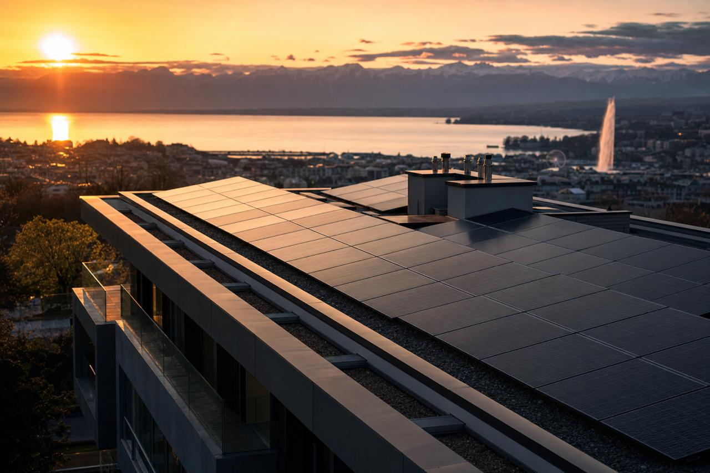

01
Rue Soubeyran 7
1202 Genève — en service depuis 2016
- Puissance
- 29,9 kWc
- Surface
- 180 m²
- Production
- 30 000 kWh/an
Autoconsommation93 %

Coopérative solaire — Genève — fondée en 2016
Enerko finance des installations photovoltaïques sur les toits genevois. L'électricité est consommée sur place, par celles et ceux qui y vivent.
01 — La coopérative
Enerko est une société coopérative fondée en 2016 à Genève. Son but : développer la production d'énergie renouvelable et les économies d'énergie, en finançant des installations photovoltaïques en autoconsommation collective.
Les membres financent les panneaux par leurs parts sociales. Les panneaux produisent sur le toit même des immeubles, et l'électricité est consommée directement par leurs occupants. Le soleil, les toits et le courant restent entre les mains de la communauté.
La gouvernance est démocratique : chaque coopérateur pèse le même poids en assemblée, quel que soit le capital investi.
Chaque part sociale finance des panneaux posés sur des toits genevois — pas des produits financiers abstraits.
Production, autoconsommation et comptes sont publiés et présentés chaque année aux membres.

02 — Les installations
01
1202 Genève — en service depuis 2016
02
1217 Meyrin — en service depuis 2017
03
1228 Plan-les-Ouates — en service depuis 2022
Les trois installations ont été réalisées par Solstis SA. Chacune publie ses courbes de production et de consommation.
Chaque part sociale finance des panneaux qui produisent déjà, à dix minutes de chez vous. Rejoignez la coopérative ou soutenez la prochaine installation.